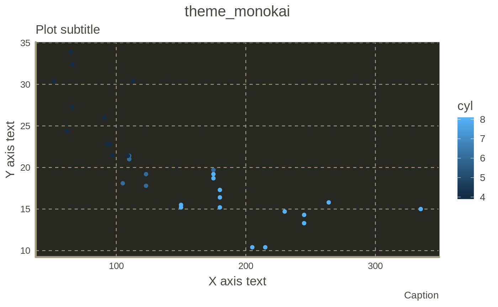
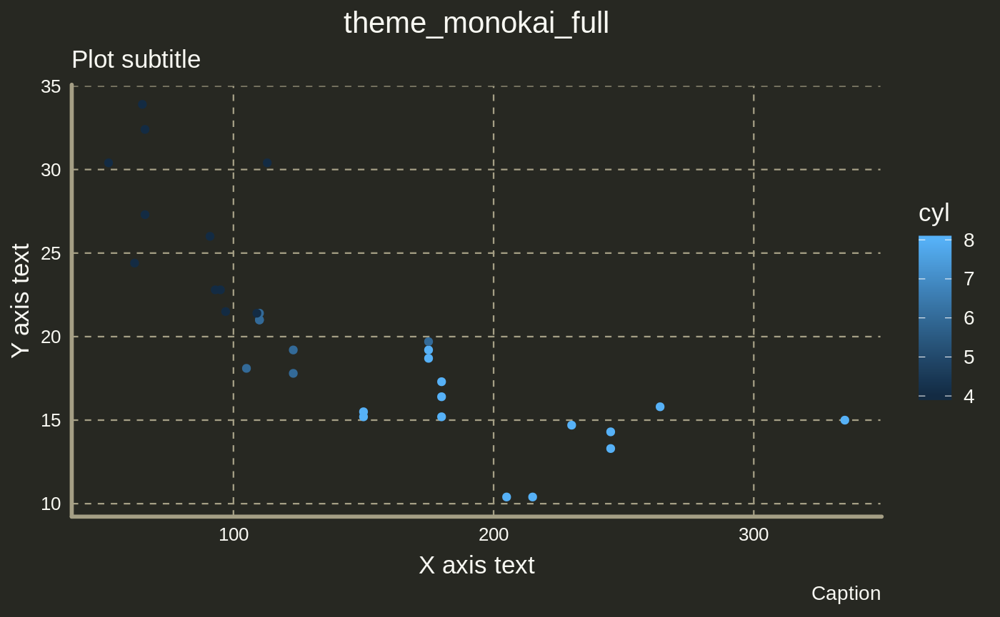
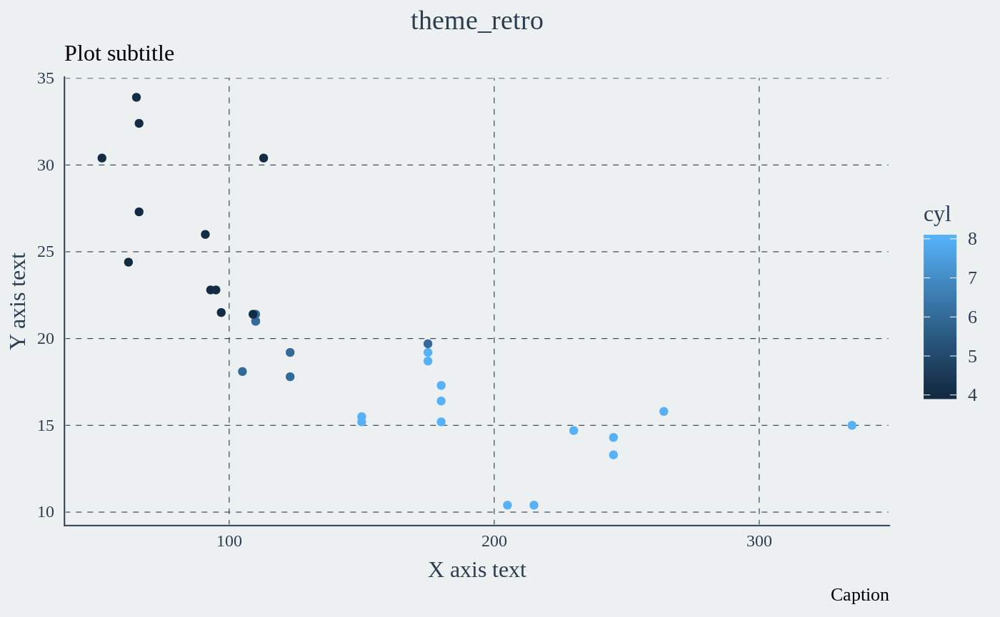
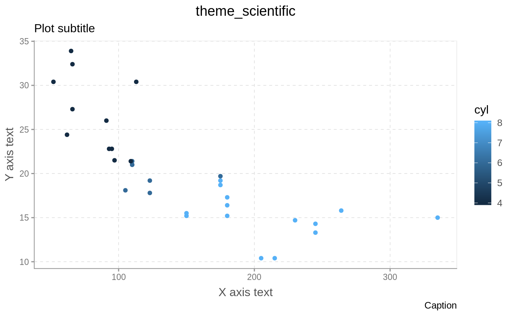

Fork notice
The original package has not been in active development for >= 2 years, and since then some things have changed. This fork aims to bring the themes up to speed with regard to missing features, like setting fonts/colors for the subtitle ggplot2 elements missing in the original package.
Examples
library(ggplot2)
library(artyfarty)
# List exported themes
exports <- getNamespaceExports("artyfarty")
themes <- exports[grepl(pattern = "^theme_", exports)]
p <- ggplot(data = mtcars, aes(x = hp, y = mpg, color = cyl)) +
geom_point() +
labs(subtitle = "Plot subtitle",
caption = "Caption",
x = "X axis text", y = "Y axis text")
for (theme in sort(themes)) {
p <- p + labs(title = theme) + eval(parse(text = theme))()
print(p)
}
Code of Conduct
Please note that the [34m’artyfarty’[39m project is released with a Contributor Code of Conduct. By contributing to this project, you agree to abide by its terms.